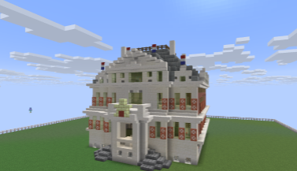
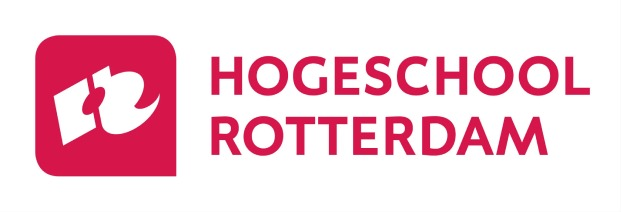
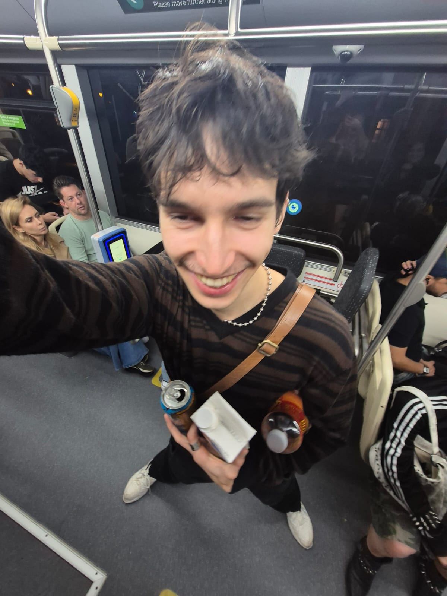
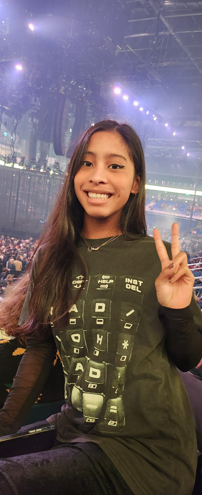
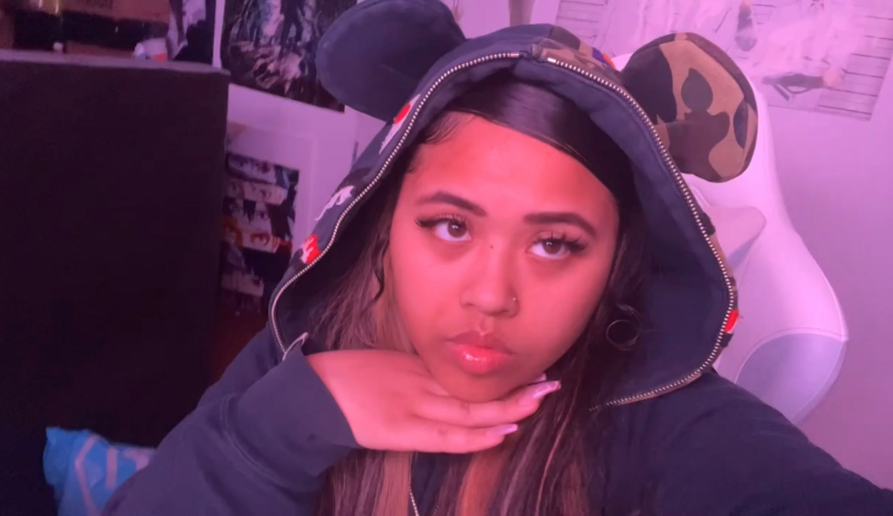
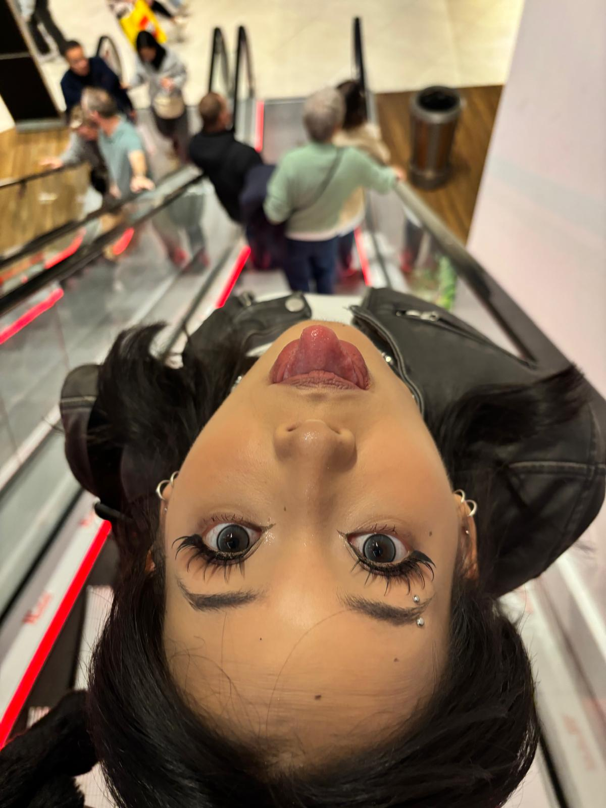
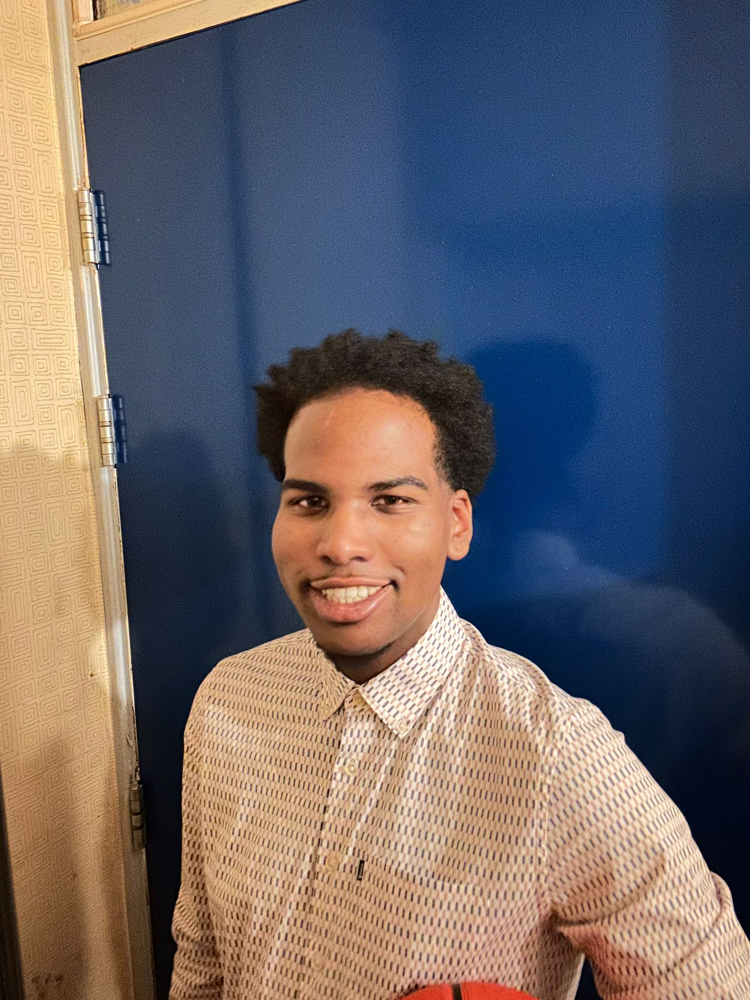

Ontwerpvraag
"Hoe kunnen wij jongeren en volwassen van 16 t/m 25 jaar oud, informeren over Rotterdamse geschiedenis over de 18e eeuw doormiddel van een immersieve en toegankelijke museum ervaring met gebruik van storytelling."
Huidige situatie
Binnen de Gemeente Rotterdam bestaan verschillende initiatieven om het stedelijke en historische data toegankelijk te maken zoals het Stadsarchief, het Open Urban Platform en het Citiverse-project. Er is een sterke technoligsche basis om data te ontsluiten en te gebruiken.
De grootste uitdaging ligt echter in structurele samenwerking tussen afdelingen en het duurzaam doorontwikkelen van producten, zodat kennis en investeringen behouden blijven.
Daarnaast wordt de doelgroep jongeren(16-30 jaar) momenteel nog beperkt bereikt, terwijl zij juist interesse hebben in interactieve en digitale ervaringen.
Gewenste situatie
In de gewenste situatie maken jongeren en jongvolwassenen (16-30 jaar) op een educatieve en interactieve manier kennis met de geschiedenis en toekomst van Rotterdam.
Het product biedt een leuke en leerzame ervaring waarbij gebruikers actief met stedelijke data werken. Tegelijkertijd wordt nieuwe interactiedata verzameld die kan worden gebruikt voor vervolgonderzoek en verdere ontwikkeling.
Het doel is bereikt wanneer binnen een bepaalde periode een duidelijke groep uit de doelgroep het product gebruikt en aangeeft dat zij nieuwe kennis hebben opgedaan.
Proces
Sprint doel
In sprint 0 hebben we een eerste onepager ontwikkeld die dient als basis voor het project. Dit vormt het startpunt waarmee we in de volgende sprints verder kunnen werken.
Het doel van deze sprint was om een duidelijk startpunt te creëren en de richting van het project vast te leggen, zodat we dit in de komende sprints verder kunnen uitwerken en verbeteren.
Tijdens de hackathon hebben we in korte tijd ideeën verkend, eerste concepten besproken en gekeken welke richting het beste aansluit bij het Schielandshuis en de doelgroep.
In-scope
- Doelgroeponderzoek onder jongeren en volwassenen
- Analyse van archief- en stedelijke data
- Conceptontwikkeling van een interactieve ervaring
- Prototype ontwerp en gebruikerstesten
- Feedback verzamelen van burgers en stakeholders
- Documenteren van het ontwikkelproces
Out-of-scope
- Volledig technisch eindproduct
- Internationale uitrol of commercieel model
- Complexe systeemintegraties
- Langetermijnonderhoud na oplevering
- Complete inclusiviteit voor doelgroep
Constraints
- Projectduur van 10 weken / 5 sprints
- Beperkte middelen binnen een studentenproject
- Beschikbaarheid en kwaliteit van data
- AVG en privacywetgeving
- Technische haalbaarheid
Onderzoek & Feedback
- Gebruikersinterviews & enquêtes
- Inzicht in wensen en voorkeuren
Prototypeontwikkeling
- Eerste interactieve versie bouwen
- VR/AR elementen intigreren
Testen & Documenteren
- Prototype testen met oelgroep
- Feedback en resultaten vastleggen
Sprint doel
In sprint 1 hebben we ons gericht op het uitvoeren van deskresearch, het toepassen van de CTA-methode en het beter begrijpen van de doelgroep.
Daarnaast hebben we verschillende technische en creatieve tools verkend, en geëxperimenteerd met nieuwe manieren om het concept vorm te geven.
De sprint werd afgesloten met het afronden van de onepager als basis voor verdere ontwikkeling.
Deskresearch inzichten
Interesse in geschiedenis
Jongeren (16–30) tonen interesse in lokale geschiedenis,
vooral wanneer deze visueel en interactief wordt aangeboden.
Belangrijke barrières zijn kosten en bereikbaarheid.
Wat werkt voor historische beleving?
VR/AR maakt geschiedenis ervaarbaar.
Storytelling en gamification verhogen betrokkenheid.
Jongeren willen actief deelnemen en invloed hebben.
Motivatie (Self Determination Theory)
Zowel intrinsieke als extrinsieke motivatie spelen een rol.
Belangrijk zijn autonomie, competentie en verbondenheid.
Multiculturele context
Rotterdam behoort tot de meest diverse steden met meer dan 170 nationaliteiten.
Dit vraagt om een inclusieve en toegankelijke benadering.
In deze fase hebben we onderzoek gedaan naar 3D-tools zoals Blender en Three.js. Hierbij lag de focus op het maken en weergeven van interactieve 3D-omgevingen.
We hebben verkend hoe deze tools kunnen bijdragen aan het visualiseren van historische data en het creëren van een immersieve ervaring.
Godot is onderzocht als mogelijke game engine voor het ontwikkelen van een interactieve ervaring.
De focus lag op gebruiksvriendelijkheid, flexibiliteit en de mogelijkheden voor het bouwen van prototypes binnen korte tijd.
Er is verkend hoe NLP (Natural Language Processing) ingezet kan worden voor een feedback forum binnen het project.
Hierbij kijken we naar manieren om gebruikersinput automatisch te analyseren en waardevolle inzichten te halen uit feedback.
De inzichten uit onderzoek en experimenten zijn vertaald naar concrete verbeteringen van het concept.
Daarnaast is er een duidelijke technische richting gekozen voor de verdere ontwikkeling.
Fieldresearch
- Gebruikersinterviews & enquêtes
- Musea en locaties bezoeken
- Inzicht in wensen en voorkeuren verdiepen
Prototypeontwikkeling
- Concept verder concretiseren
- Eerste interactieve versie bouwen
- Verdiepen in Blender en Three.js
Testen & Documenteren
- Prototype testen met doelgroep
- Feedback verzamelen en analyseren
- Resultaten documenteren
Sprint doel
In sprint 2 hebben we het concept verder aangescherpt en vertaald naar zowel onderzoek als een eerste werkend prototype.
De focus lag op het valideren van aannames via fieldresearch en het ontwikkelen van een interactieve ervaring gebaseerd op deze inzichten.
Fieldresearch
Tijdens deze sprint hebben we actief fieldresearch uitgevoerd om beter inzicht te krijgen in zowel de inhoud als de doelgroep.
- Bezoek aan het Stadsarchief: Hier hebben we onderzoek gedaan naar historische content en inspiratie opgedaan voor het verhaal en de context van het product.
- Interviews en enquêtes: We hebben gebruikers bevraagd om aannames te testen en inzicht te krijgen in hun interesses, gedrag en voorkeuren.
Deze inzichten vormden de basis voor de keuzes die zijn gemaakt in het prototype.
Prototype
Op basis van de inzichten uit het onderzoek hebben we een eerste interactief prototype ontwikkeld in Minecraft.
In dit prototype hebben we een vereenvoudigde versie van het Schielandshuis nagebouwd. Binnen deze omgeving hebben we spelelementen toegevoegd zoals quests en NPC’s om de gebruiker actief door de ervaring te begeleiden.
- Reconstructie van het Schielandshuis in Minecraft
- Toevoegen van quests (opdrachten)
- NPC’s die informatie en interactie bieden
- Verkennen van storytelling binnen een game-omgeving

Eerste prototype van het Schielandshuis in Minecraft
Onderzoek & Validatie
- Extra feedback verzamelen op prototype
- Inzichten verder verdiepen
Prototypeontwikkeling
- Minecraft prototype uitbreiden
- Gameplay en interactie verbeteren
Testen & Itereren
- Gebruikerstesten uitvoeren
- Iteraties doorvoeren op basis van feedback
Hier komt straks de inhoud van Sprint 3.
Hier komt straks de inhoud van Sprint 4.
Hier komt straks de inhoud van Sprint 5.
Partners



Meet the team

Tobias Zelders | 24 jaar
INF
"We listen and we don't judge"
0981403@hr.nl

Julina Mercera | 22 jaar
INF
"Worry less, live more"
1055662@hr.nl

Abigail Toekimin | 22 jaar
CMGT
"Failure is acceptable - giving up is not!"
1086967@hr.nl
Pepijn Groeneweg | 21 jaar
CMD
“Be as you wish to seem”
1079060@hr.nl

Tallysia Kromohardjo | 22 jaar
CMD
“Design with passion”
1077776@hr.nl

Tyrese Goedhart | 21 jaar
ADSAI
"Respect is earned, not given"
1079191@hr.nl
Teamwaarden
Ons product moet educatief zijn op een immersieve en interactieve manier, ons product moet een kans zijn om educatie leuker en laagdrempeliger te maken. Waarmee wij de gebruiker een leuke en leerzame ervaring willen geven.
Ons product moet toegankelijk zijn voor iedereen, wij willen dat iedereen gebruik kan maken van ons product. Hier met de focus op mensen die mindervalide zijn, slechter ziend of horend.
Wij willen de geschiedenis vanuit meerdere perspectieven tonen en kritisch denken over representatie. De geschiedenis moet niet verheerlijkt worden.
De bezoeker moet een persoonlijke connectie voelen met de geschiedenis, de kamer en de personen uit het verhaal. Door de gebroeders Bisschop centraal te stellen willen wij meer emotionele betrokkenheid. Door interactie willen wij de gebruikers ook de ervaring geven dat zij in het verhaal zitten.
Ons product moet nieuwsgierigheid opwekken bij de gebruiker doordat wij geschiedenis op een unieke, immersieve en interactieve manier presenteren. Wij willen dat gebruikers na het bezoeken geneigd zijn meer te leren over de geschiedenis van Rotterdam.
Samenwerking
Binnen ons team vinden we het belangrijk dat iedereen zich gehoord voelt en weet waar hij of zij aan toe is. Daarom communiceren we regelmatig en maken we duidelijke afspraken. We werken met een heldere taakverdeling, maar helpen elkaar wanneer dat nodig is. Ideeën maken we vaak visueel met schetsen, voorbeelden of prototypes om misverstanden te voorkomen. Tijdens overlegmomenten delen we onze voortgang, bespreken we uitdagingen en geven we elkaar op een respectvolle manier feedback.